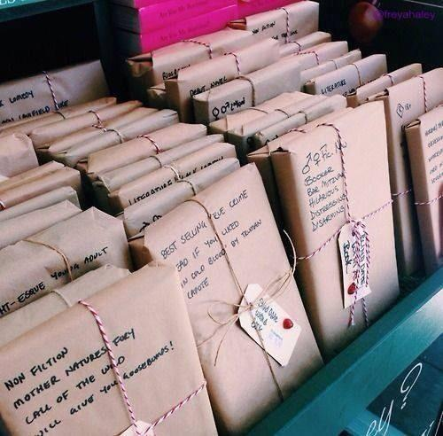

Welcome to Shy Guinea Pig Blind Books

Welcome to Shy Guinea Pig Blind Books, a cozy bookstore where every purchase becomes a surprise adventure. Instead of choosing a book by its cover, customers select carefully wrapped books based on clues about the story, mood, and genre.
Our goal is to help readers discover stories they may never have picked up on their own. Each blind book package is thoughtfully created for curious readers who enjoy the excitement of uncovering a hidden favorite.
How Blind Books Work

Every book at Shy Guinea Pig Blind Books is wrapped and labeled with a few hints. Readers might discover clues about the setting, characters, themes, or emotions inside the story, but the title remains a mystery until the wrapping is removed.
Whether you are looking for a relaxing weekend read, a thrilling mystery, or a magical escape, our blind books make choosing your next adventure fun and unexpected.
Find Your Next Surprise Book
Not sure which mystery package to choose? Let our Shy Guinea Pig helper recommend a book experience for you.
Your surprise recommendation will appear here!
Visit Our Cozy Corner
Shy Guinea Pig Blind Books is designed to feel like a friendly reading nook. Customers can browse mystery selections, trade recommendations, and enjoy the excitement of discovering a new story.
Stop by and unwrap a new adventure today. Who knows? The perfect book may be one you never expected to find.